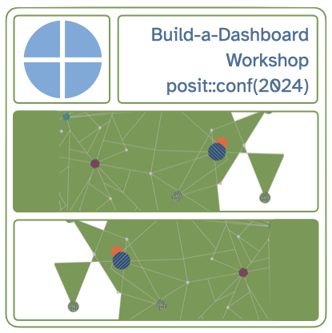
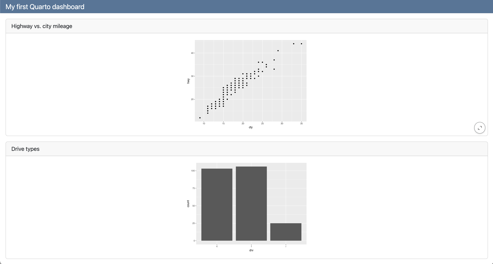
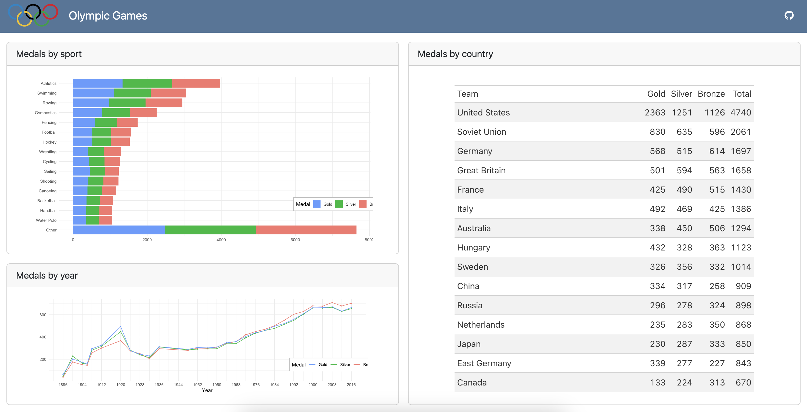
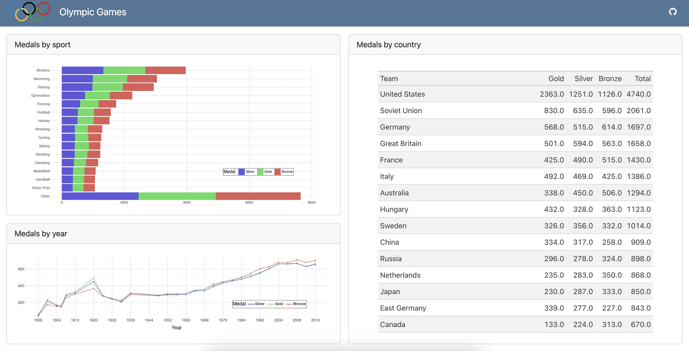

Hello, dashboards!
Build-a-Dashboard Workshop
Duke University
Posit, PBC
2024-08-12
Setup instructions
While you wait for the workshop to begin…
Make sure that you’ve completed the setup steps at
pos.it/quarto-dashboards-24 > Setup
Welcome
Introductions

Dr. Mine Çetinkaya-Rundel
Professor, Statistical Science, Duke University
Developer Educator, Posit
Carlos Schedigger,
Software Engineer, Posit
Alex Chisholm,
Product Manager, Posit
Ron Blum,
QA Engineer, Posit
Workshop materials
One link for all materials

Schedule
Important
TO DO: Update schedule.
| Time | Activity |
|---|---|
| 09:00 - 10:30 | Hello, dashboards! |
| 10:30 - 11:00 | Coffee break |
| 11:00 - 12:30 | Module 2 |
| 12:30 - 13:30 | Lunch break |
| 13:30 - 15:00 | Module 3 |
| 15:00 - 15:30 | Coffee break |
| 15:30 - 17:00 | Module 4 |
WiFi
Username: Posit Conf 2024
Password: conf2024
Code of Conduct
The Code of Conduct can be found at https://posit.co/code-of-conduct.
Please review it carefully. You can report Code of Conduct violations in person, by email, or by phone. Please see the policy linked above for contact information.
Other useful info
There are gender-neutral bathrooms located on floors 3, 4, 5, 6, and 7.
The meditation and prayer room is Room 503. Available Mon & Tues 7am - 7pm, and Wed 7am - 5pm.
The lactation room is located in 509, same timings as above.
Participants who do not wish to be photographed have red lanyards; please note everyone’s lanyard colors before taking a photo and respect their choices.
Asking for help
Important
TO DO: Update colors.
I’m stuck
I’m done
I have a general question
Discord
You should have received an email with an invitation and instructions for joining the conference’s discord server.
This workshop has a private channel under Workshops:
#workshop-quarto-dashboardsThis is a great place to ask questions, share responses to exercises, post resources, memes, or most anything else before, during, and after the workshop.
Computational Environment
Using your own system
If you’d like to use your own system, please see pos.it/quarto-dashboards-24 > Setup.
Posit Cloud
Important
TO DO: Get Marko to make a short link.
You can use the following link to join the workshops Posit Cloud space:
Once you have joined, navigate to Contents on the top menu.
Meeting you where you are
I’ll assume you
know some R and/or Python
have worked in RStudio and/or VS Code
have worked with Quarto
want to learn about Quarto Dashboards
I’ll teach you
basics of a Quarto Dashboard
making your dashboards dashing
some R and/or Python tips along the way
Checking in one more time
Have you completed the following?
pos.it/quarto-dashboards-24 > Setup
Let’s get started!
Hello, Dashboards!
Quarto
- is a (relatively) new, open-source, scientific, and technical publishing system
- aims to make the process of creating and collaborating dramatically better
Quarto ➝ many outputs
With Quarto you can weave together narrative text and code to produce elegantly formatted output as documents, web pages, blog posts, books, and more…
Quarto ➝ dashboards
Since Quarto 1.4!
Quarto version
Demo: Olympic Games dashboard
Notebook ➝ Dashboard
Dashboard basics
Cards
Dashboards are composed of cards.
Rows and columns
Cards are arranged into rows and columns.
Layouts
Pages, tabsets, and sidebars allow for more advanced layouts.
:::
Step-by-step
Let’s make a dashboard, step-by-step
First with R
Then with Python
First dashboard in R
Step 1: format: dashboard
Step 2: Add a card
Step 2: Add a card
Step 3: Add another card
Step 3: Add another card
Step 4: Add titles to cards
Step 4: Add titles to cards
Steps 1 - 4
First dashboard in Python
Step 1: format: dashboard
Step 2: Add a card
Step 2: Add a card
Step 3: Add another card
dashboard-py.qmd
Step 3: Add another card
dashboard-py.qmd
Step 4: Add titles to cards
dashboard-py.qmd
---
title: "My first Quarto dashboard"
format: dashboard
---
```{python}
from plotnine import ggplot, geom_point, aes
from plotnine.data import mpg
```
```{python}
#| title: Highway vs. city mileage
(
ggplot(mpg, aes(x = "cty", y = "hwy"))
+ geom_point()
)
```
```{python}
#| title: Drive types
(
ggplot(mpg, aes(x = "drv"))
+ geom_bar()
)
```Step 4: Add titles to cards
dashboard-py.qmd
---
title: "My first Quarto dashboard"
format: dashboard
---
```{python}
from plotnine import ggplot, geom_point, aes
from plotnine.data import mpg
```
```{python}
#| title: Highway vs. city mileage
(
ggplot(mpg, aes(x = "cty", y = "hwy"))
+ geom_point()
)
```
```{python}
#| title: Drive types
(
ggplot(mpg, aes(x = "drv"))
+ geom_bar()
)
```
Steps 1 - 4
Your turn
Start
Locate one of the following documents, depending on whether you prefer to work in R or Python, either in Posit Cloud or the computing environment of your choice.
Start with olympicdash-r-1-begin.qmd.
Start with olympicdash-py-1-begin.qmd.
Goal
Your goal is to create one of the following dashboards.


Step 1
- Turn the output to a dashboard.
- Add
titles to code cells.
03:00
Step 2
- Add a GitHub icon and link to a GitHub repository (that may or may not contain the code for the dashboard you’re building).
- Add the olympics logo from the
imagesfolder.
05:00
Step 3
Reorganize the cards into rows and columns as shown below.
05:00